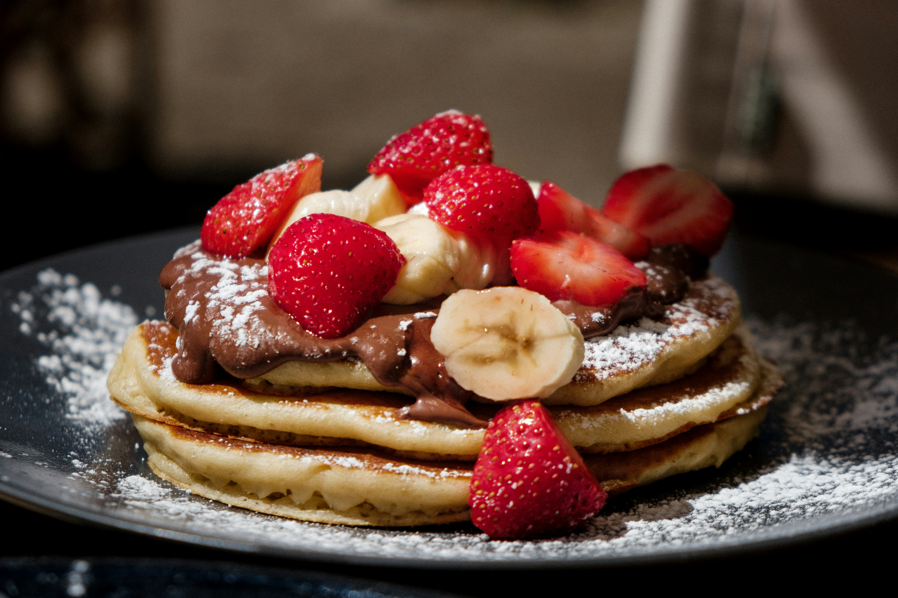
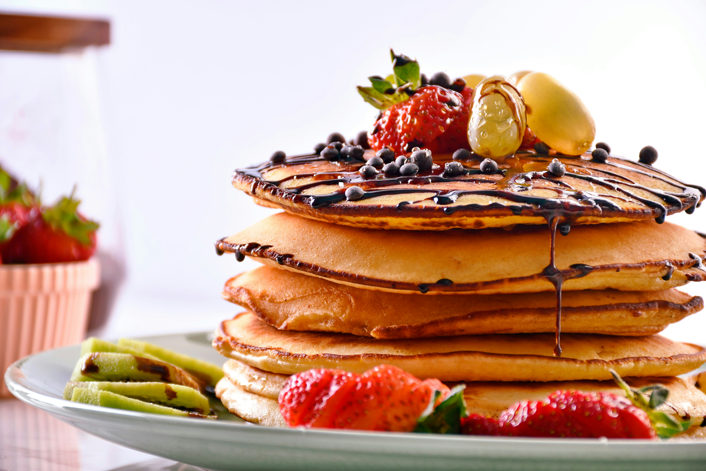
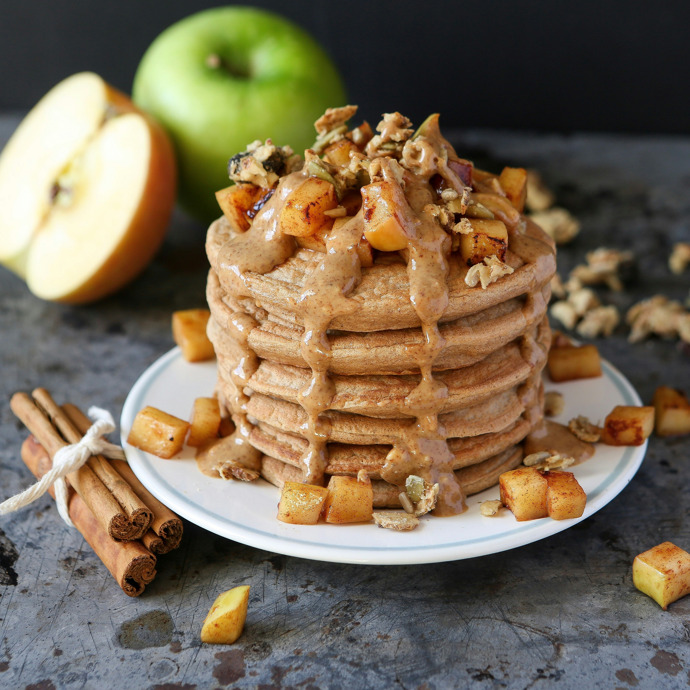

Enkelt recept på pannkakor
Gör traditionella tunna pannkakor med detta enkla och goda pannkaksrecept.
Portioner
4 port
Tid
30 min
Svårighetsgrad
Lätt
Ingredienser
För 4 portioner
Så här gör du
- Blanda mjöl och salt i en bunke.
- Vispa i hälften av mjölken och vispa till en slät smet.
- Vispa i resten av mjölken och äggen.
- Låt smeten vila ca 10 minuter.
- Stek tunna pannkakor i lite smör, en i taget, i en stek- eller pannkakspanna.
- Servera med sylt, bär eller frukt.
Serveringsförslag

